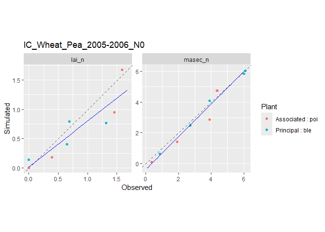
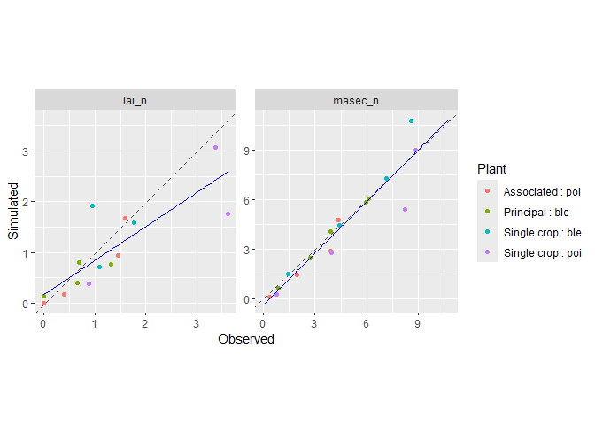

CroPlotR standardizes the analysis and visualization of crop model outputs, including models such as STICS, APSIM, and others.
The package works seamlessly with models wrapped using the CroptimizR package through the cropr_simulation data format (see section Data structure).
Stay updated: To receive notifications about new releases, click “Watch” → “Custom” → “Releases” at the top of this repository.
Table of Contents
-
CroPlotR
- Table of Contents
- 1. Installation
- 2. Introduction
- 3. Dynamic plots
- 4. Scatter plots
- 5. Comparing model versions
- 6. Error bars
- 7. Intercrops
- 8. Saving Plots
- 9. Extracting Individual Plots
- 10. Statistics
- 11. Data manipulation
- 12. Integration with Other Packages
- 13. Data structure
- 14. Getting help
- 15. Citation
1. Installation
Install the latest release from GitHub using either devtools or remotes:
Using remotes (recommended):
# install.packages("remotes")
remotes::install_github("SticsRPacks/CroPlotR@*release")Using devtools:
devtools::install_github("SticsRPacks/CroPlotR@*release")2. Introduction
Core Functions
CroPlotR provides two main functions:
These functions cover most visualization and analysis needs. Additional helper functions are available for data manipulation (see section Data manipulation).
Using CroPlotR with Model Wrappers
If you’re using a model wrapper from the CroptimizR package, you can simply extract the simulations with: sim <- result$sim_list, where result is the object returned by the model wrapper. For detailed examples with STICS and APSIM, visit CroptimizR’s documentation (Articles tab).
Example Data
The following examples use simulation and observation data from the STICS crop model:
Sole crops (objects sim and obs):
- Pea in sole crop (situation:
SC_Pea_2005-2006_N0) - Wheat in sole crop (situation:
SC_Wheat_2005-2006_N0)
Intercrop (sim_intercrop and obs_intercrop):
- Wheat and Pea intercrop (situation:
IC_Wheat_Pea_2005-2006_N0)
Click to view code for loading example data
library(CroPlotR)
#> Registered S3 method overwritten by 'CroPlotR':
#> method from
#> [.cropr_simulation SticsRFiles
#> Learn CroPlotR at: https://SticsRPacks.github.io/CroPlotR
#>
#> Please cite CroPlotR in your work:
#> Vezy R, Buis S, Midingoyi C, Lecharpentier P, Giner M (2025).
#> CroPlotR: A Package to Analyze Crop Model Simulations Outputs with
#> Plots and Statistics. R package version 0.11.0,
#> https://doi.org/10.5281/zenodo.4442330,
#> <https://github.com/SticsRPacks/CroPlotR>.
rdata_path <- system.file(file.path("extdata", "readme_sim_obs_example.RData"), package = "CroPlotR")
load(rdata_path)3. Dynamic Plots
Dynamic plots show variable values over time, making them ideal for visualizing temporal patterns in crop model outputs.
3.1. Simple Dynamic Plot
Create basic time-series plots for all variables and situations simulated (in this example, three variables, lai_n, masec_n and mafruit, and two situations, SC_Pea_2005-2006_N0 and SC_Wheat_2005-2006_N0):
plot(sim)
#> $`SC_Pea_2005-2006_N0`

3.2. Adding Observations
Overlay observed data on simulated outputs using the obs argument:
plots <- plot(sim, obs = obs)
# Only displaying the first situation for this one:
plots[[1]]
Note: The
obsargument must be explicitly named.
3.3. Filtering Variables
By default, all variables are plotted. Use var to select specific variables:
plots <- plot(sim, obs = obs, var = c("lai_n"))
# Only displaying the first situation for this one:
plots[[1]]
3.4. Successive Situations
Combine multiple sequential situations (e.g., crop rotations) into a single continuous timeline using the successive parameter:
plot(
sim_rot,
var = c("resmes", "masec_n"),
successive = list(list("demo_Wheat1", "demo_BareSoil2", "demo_maize3"))
)
#> $`demo_Wheat1 | demo_BareSoil2 | demo_maize3 | `
3.5. Overlaying Variables
Plot multiple variables on the same graph using the overlap parameter:
plots <- plot(sim, obs = obs, overlap = list(list("lai_n", "masec_n")))
# Only displaying the first situation for this one:
plots[[1]]
Note: Automatic variable scaling is not yet available (see issue). To scale variables, transform your data before plotting and add a secondary axis using
sec_axis().
4. Scatter Plots
Scatter plots compare simulated versus observed values, providing visual assessment of model performance.
4.1. Simple Scatter Plot
Create observed vs. simulated scatter plots by setting type = "scatter":
plots <- plot(sim, obs = obs, type = "scatter", all_situations = FALSE)
# Only displaying the first situation for this one:
plots[[1]]
4.2. Plotting Residuals
Visualize model residuals (observed - simulated values) using select_scat = "res":
plots <- plot(
sim,
obs = obs,
type = "scatter",
select_scat = "res",
all_situations = FALSE
)
# Only displaying the first situation again, but this time using its name:
plots$`SC_Pea_2005-2006_N0`
4.3. Grouping Situations
Combine data from all situations in a single plot using all_situations = TRUE:
plot(sim, obs = obs, type = "scatter", all_situations = TRUE)
#> $all_situations
4.4. Reference Variable on the X-axis
Use reference_var to specify which variable appears on the x-axis. Suffix the variable name with _obs, _sim or _res to choose observed, simulated or residual values:
plot(
sim,
obs = obs,
type = "scatter",
select_scat = "res",
all_situations = TRUE,
reference_var = "lai_n_sim"
)
#> $all_situations
4.5. Distinguishing Situations with Shapes
When plotting multiple situations together (all_situations = TRUE), differentiate them using the shape_sit parameter.
Display situation names as text labels:
plot(
sim,
obs = obs,
type = "scatter",
all_situations = TRUE,
shape_sit = "txt"
)
#> $all_situations
Text labels can become cluttered with many data points. Use distinct symbols instead:
plot(
sim,
obs = obs,
type = "scatter",
all_situations = TRUE,
shape_sit = "symbol"
)
#> $all_situations
Group multiple situations under a single symbol (e.g., for identified clusters):
plot(
sim,
obs = obs,
type = "scatter",
all_situations = TRUE,
shape_sit = "group",
situation_group = list(list("SC_Pea_2005-2006_N0", "SC_Wheat_2005-2006_N0"))
)
#> $all_situations
Customize legend labels by naming your situation_group list:
plot(
sim,
obs = obs,
type = "scatter",
all_situations = TRUE,
shape_sit = "group",
situation_group = list(
"Two Single Crops" = list("SC_Pea_2005-2006_N0", "SC_Wheat_2005-2006_N0")
)
)
#> $all_situations
5. Comparing Model Versions
Compare different model versions or parameter sets by passing multiple simulation objects to plot(). This is why the obs argument must be explicitly named.
Dynamic Plot Comparison
plots <- plot(sim, sim2, obs = obs, all_situations = FALSE)
# Only displaying the first situation for this one:
plots[[1]]
Naming Model Versions
Provide descriptive names for each simulation group:
plots <- plot(
original = sim,
"New version" = sim2,
obs = obs
)
# Only displaying the first situation for this one:
plots[[1]]
Scatter Plot Comparison
Model versions can also be compared using scatter plots:
plots <- plot(
original = sim,
"New version" = sim2,
obs = obs,
type = "scatter",
all_situations = FALSE
)
# Only displaying the first situation for this one:
plots[[1]]
6. Error Bars
Add uncertainty estimates to observations using the obs_sd parameter, which must have the same structure as obs. Error bars are then displayed as ±2 standard deviations, corresponding to an approximate 95% confidence interval under the assumption of Gaussian observation errors.
plot(sim, obs = obs, obs_sd = obs_sd, type = "scatter", all_situations = TRUE)
#> $all_situations
7. Intercrops
CroPlotR automatically handles simulations of intercrop situations where multiple plant species are grown together.
Dynamic Plots for Intercrops
plot(sim_intercrop, obs = obs_intercrop)
#> $`IC_Wheat_Pea_2005-2006_N0`
Scatter Plots for Intercrops
plot(sim_intercrop, obs = obs_intercrop, type = "scatter", all_situations = TRUE)
#> $all_situations
8. Saving Plots
Save as PNG
Export individual plots as PNG files using save_plot_png():
plots <- plot("New version" = sim, original = sim2, obs = obs, type = "scatter")
save_plot_png(plot = plots, out_dir = "path/to/directory", suffix = "_scatter")
# or by piping:
plots <- plot(
"New version" = sim,
original = sim2,
obs = obs,
type = "scatter"
) %>%
save_plot_png(., out_dir = "path/to/directory", suffix = "_scatter")Save as PDF
Export plots to PDF using save_plot_pdf(). Set file_per_var = TRUE to create separate PDFs for each variable:
plots <- plot(sim, obs = obs)
save_plot_pdf(plot = plots, out_dir = "path/to/directory", file_per_var = FALSE)9. Extracting Individual Plots
The plot() function returns a named list of ggplot objects, where names correspond to situations:
Access by Name
Access individual plots using their situation name (use backticks if the name contains special characters):
p$`SC_Wheat_2005-2006_N0`
Filtering Plots
Use extract_plot() to filter plots by situation and/or variable. This is useful when working with many situations and variables.
Example: Extract only the wheat situation and the masec_n variable:
plots <- plot(sim, obs = obs, type = "scatter", all_situations = FALSE)
extract_plot(
plots,
situation = c("SC_Wheat_2005-2006_N0"), var = c("masec_n")
)
#> $`SC_Wheat_2005-2006_N0`
10. Statistics
Compute performance metrics to quantitatively compare simulated and observed values.
10.1. Basic Usage
Calculate statistics for each situation individually:
summary(sim, obs = obs, all_situations = FALSE)| group | situation | variable | n_obs | mean_obs | mean_sim | r_means | sd_obs | sd_sim | CV_obs | CV_sim | R2 | SS_res | Inter | Slope | RMSE | RMSEs | RMSEu | nRMSE | rRMSE | rRMSEs | rRMSEu | pMSEs | pMSEu | Bias2 | SDSD | LCS | rbias2 | rSDSD | rLCS | MAE | FVU | MSE | EF | Bias | ABS | MAPE | RME | tSTUD | tLimit | Decision |
|---|---|---|---|---|---|---|---|---|---|---|---|---|---|---|---|---|---|---|---|---|---|---|---|---|---|---|---|---|---|---|---|---|---|---|---|---|---|---|---|---|
| Version_1 | SC_Pea_2005-2006_N0 | lai_n | 3 | 2.622222 | 1.738637 | 66.30394 | 1.5135732 | 1.3463799 | 57.72101 | 77.43883 | 0.6945994 | 3.7558828 | -0.2053841 | 0.7413638 | 1.1189106 | 0.9396204 | 0.6075149 | 42.670319 | 0.4267032 | 0.3583298 | 0.2316794 | 0.7052029 | 0.2947971 | 0.7807234 | 0.0279536 | 0.6789027 | 0.1135424 | 0.0040654 | 0.0987344 | 0.8835856 | 0.3085491 | 1.2519609 | 0.1802618 | -0.8835856 | 0.8835856 | 0.3901011 | -0.3901011 | -1.8203030 | 4.302653 | OK |
| Version_1 | SC_Pea_2005-2006_N0 | mafruit | 1 | 4.355000 | 4.742713 | 108.90270 | NA | NA | NA | NA | 0.0000000 | 0.1503211 | 4.7427127 | NA | 0.3877127 | 0.3877127 | 0.0000000 | 8.902703 | 0.0890270 | 0.0890270 | 0.0000000 | 1.0000000 | 0.0000000 | 0.1503211 | NA | NA | 0.0079258 | NA | NA | 0.3877127 | NA | 0.1503211 | -Inf | 0.3877127 | 0.3877127 | 0.0890270 | 0.0890270 | NA | NaN | Insufficient size |
| Version_1 | SC_Pea_2005-2006_N0 | masec_n | 4 | 5.451667 | 4.382542 | 80.38904 | 3.7848396 | 3.7494028 | 69.42537 | 85.55314 | 0.8907017 | 9.3636018 | -0.7144037 | 0.9349336 | 1.5300001 | 1.0901888 | 1.0734937 | 28.064815 | 0.2806481 | 0.1999735 | 0.1969111 | 0.5077156 | 0.4922844 | 1.1430265 | 0.0012558 | 1.5959095 | 0.0384590 | 0.0000423 | 0.0536970 | 1.1660625 | 0.1114949 | 2.3409005 | 0.7821153 | -1.0691242 | 1.1660625 | 0.3308096 | -0.3198354 | -1.6919332 | 3.182446 | OK |
| Version_1 | SC_Wheat_2005-2006_N0 | lai_n | 3 | 1.273333 | 1.402287 | 110.12723 | 0.4396684 | 0.6236645 | 34.52893 | 44.47482 | 0.0098002 | 1.1058377 | 1.2234797 | 0.1404243 | 0.6071347 | 0.3344381 | 0.5067186 | 47.680736 | 0.4768074 | 0.2626477 | 0.3979465 | 0.3034319 | 0.6965681 | 0.0166290 | 0.0338546 | 0.4941208 | 0.0102561 | 0.0208801 | 0.3047537 | 0.5115933 | 2.7312604 | 0.3686126 | -1.8602948 | 0.1289533 | 0.5115933 | 0.4881989 | 0.1825306 | 0.3073876 | 4.302653 | OK |
| Version_1 | SC_Wheat_2005-2006_N0 | mafruit | 1 | 3.825000 | 5.675395 | 148.37634 | NA | NA | NA | NA | 0.0000000 | 3.4239617 | 5.6753950 | NA | 1.8503950 | 1.8503950 | 0.0000000 | 48.376340 | 0.4837634 | 0.4837634 | 0.0000000 | 1.0000000 | 0.0000000 | 3.4239617 | NA | NA | 0.2340270 | NA | NA | 1.8503950 | NA | 3.4239617 | -Inf | 1.8503950 | 1.8503950 | 0.4837634 | 0.4837634 | NA | NaN | Insufficient size |
| Version_1 | SC_Wheat_2005-2006_N0 | masec_n | 4 | 5.393750 | 6.015903 | 111.53469 | 3.1594630 | 3.9552603 | 58.57637 | 65.74675 | 0.9637756 | 4.8187352 | -0.6129841 | 1.2289940 | 1.0975809 | 0.8829841 | 0.6519378 | 20.349124 | 0.2034912 | 0.1637050 | 0.1208691 | 0.6471914 | 0.3528086 | 0.3870737 | 0.6332935 | 0.4568533 | 0.0133049 | 0.0217682 | 0.0157035 | 0.6221525 | 0.1092090 | 1.2046838 | 0.8390892 | 0.6221525 | 0.6221525 | 0.0866369 | 0.0866369 | 1.1917478 | 3.182446 | OK |
Note: The
obsargument must be explicitly named (same reason as forplot()).
Aggregated Statistics
Compute statistics across all situations simultaneously:
summary(sim, obs = obs, all_situations = TRUE)| group | situation | variable | n_obs | mean_obs | mean_sim | r_means | sd_obs | sd_sim | CV_obs | CV_sim | R2 | SS_res | Inter | Slope | RMSE | RMSEs | RMSEu | nRMSE | rRMSE | rRMSEs | rRMSEu | pMSEs | pMSEu | Bias2 | SDSD | LCS | rbias2 | rSDSD | rLCS | MAE | FVU | MSE | EF | Bias | ABS | MAPE | RME | tSTUD | tLimit | Decision |
|---|---|---|---|---|---|---|---|---|---|---|---|---|---|---|---|---|---|---|---|---|---|---|---|---|---|---|---|---|---|---|---|---|---|---|---|---|---|---|---|---|
| Version_1 | all_situations | lai_n | 6 | 1.947778 | 1.570462 | 80.62838 | 1.2407801 | 0.9563566 | 63.702343 | 60.89653 | 0.4849226 | 4.861720 | 0.5250179 | 0.5367367 | 0.9001593 | 0.6463004 | 0.6265641 | 46.21468 | 0.4621468 | 0.3318142 | 0.3216815 | 0.5155017 | 0.4844983 | 0.1423674 | 0.0808967 | 0.7206064 | 0.0375260 | 0.0213232 | 0.1899413 | 0.6975894 | 0.5206137 | 0.8102867 | 0.3684171 | -0.3773161 | 0.6975894 | 0.4391500 | -0.1037853 | -1.0323533 | 2.570582 | OK |
| Version_1 | all_situations | mafruit | 2 | 4.090000 | 5.209054 | 127.36073 | 0.3747666 | 0.6595060 | 9.162997 | 12.66076 | 1.0000000 | 3.574283 | 12.4065456 | -1.7597779 | 1.3368401 | 1.3368401 | 0.0000000 | 32.68558 | 0.3268558 | 0.3268558 | 0.0000000 | 1.0000000 | 0.0000000 | 1.2522815 | 0.0810765 | 0.9886432 | 0.0748610 | 0.0048467 | 0.0591007 | 1.1190538 | 7.6163742 | 1.7871414 | -24.4487917 | 1.1190538 | 1.1190538 | 0.2863952 | 0.2863952 | 1.5301393 | 12.706205 | OK |
| Version_1 | all_situations | masec_n | 8 | 5.422708 | 5.199223 | 95.87870 | 3.2277449 | 3.6731078 | 59.522746 | 70.64725 | 0.8562305 | 14.182337 | -0.5109084 | 1.0530035 | 1.3314624 | 0.2748750 | 1.3027800 | 24.55346 | 0.2455346 | 0.0506896 | 0.2402453 | 0.0426199 | 0.9573801 | 0.0499459 | 0.1983481 | 1.7706190 | 0.0016985 | 0.0067452 | 0.0602133 | 0.8941075 | 0.1889905 | 1.7727921 | 0.8055306 | -0.2234858 | 0.8941075 | 0.2087232 | -0.1165992 | -0.4504803 | 2.364624 | OK |
10.2. Comparing Multiple Groups
Compute statistics for multiple simulation groups (e.g., different model versions or parameter sets):
summary(sim, sim2, obs = obs)| group | situation | variable | n_obs | mean_obs | mean_sim | r_means | sd_obs | sd_sim | CV_obs | CV_sim | R2 | SS_res | Inter | Slope | RMSE | RMSEs | RMSEu | nRMSE | rRMSE | rRMSEs | rRMSEu | pMSEs | pMSEu | Bias2 | SDSD | LCS | rbias2 | rSDSD | rLCS | MAE | FVU | MSE | EF | Bias | ABS | MAPE | RME | tSTUD | tLimit | Decision |
|---|---|---|---|---|---|---|---|---|---|---|---|---|---|---|---|---|---|---|---|---|---|---|---|---|---|---|---|---|---|---|---|---|---|---|---|---|---|---|---|---|
| Version_1 | all_situations | lai_n | 6 | 1.947778 | 1.570462 | 80.62838 | 1.2407801 | 0.9563566 | 63.702343 | 60.89653 | 0.4849226 | 4.861720 | 0.5250179 | 0.5367367 | 0.9001593 | 0.6463004 | 0.6265641 | 46.21468 | 0.4621468 | 0.3318142 | 0.3216815 | 0.5155017 | 0.4844983 | 0.1423674 | 0.0808967 | 0.7206064 | 0.0375260 | 0.0213232 | 0.1899413 | 0.6975894 | 0.5206137 | 0.8102867 | 0.3684171 | -0.3773161 | 0.6975894 | 0.4391500 | -0.1037853 | -1.0323533 | 2.570582 | OK |
| Version_1 | all_situations | mafruit | 2 | 4.090000 | 5.209054 | 127.36073 | 0.3747666 | 0.6595060 | 9.162997 | 12.66076 | 1.0000000 | 3.574283 | 12.4065456 | -1.7597779 | 1.3368401 | 1.3368401 | 0.0000000 | 32.68558 | 0.3268558 | 0.3268558 | 0.0000000 | 1.0000000 | 0.0000000 | 1.2522815 | 0.0810765 | 0.9886432 | 0.0748610 | 0.0048467 | 0.0591007 | 1.1190538 | 7.6163742 | 1.7871414 | -24.4487917 | 1.1190538 | 1.1190538 | 0.2863952 | 0.2863952 | 1.5301393 | 12.706205 | OK |
| Version_1 | all_situations | masec_n | 8 | 5.422708 | 5.199223 | 95.87870 | 3.2277449 | 3.6731078 | 59.522746 | 70.64725 | 0.8562305 | 14.182337 | -0.5109084 | 1.0530035 | 1.3314624 | 0.2748750 | 1.3027800 | 24.55346 | 0.2455346 | 0.0506896 | 0.2402453 | 0.0426199 | 0.9573801 | 0.0499459 | 0.1983481 | 1.7706190 | 0.0016985 | 0.0067452 | 0.0602133 | 0.8941075 | 0.1889905 | 1.7727921 | 0.8055306 | -0.2234858 | 0.8941075 | 0.2087232 | -0.1165992 | -0.4504803 | 2.364624 | OK |
| Version_2 | all_situations | lai_n | 6 | 1.947778 | 1.727508 | 88.69122 | 1.2407801 | 1.0519922 | 63.702343 | 60.89653 | 0.4849226 | 4.432653 | 0.5775197 | 0.5904103 | 0.8595205 | 0.5135666 | 0.6892205 | 44.12826 | 0.4412826 | 0.2636679 | 0.3538496 | 0.3570105 | 0.6429895 | 0.0485188 | 0.0356408 | 0.7926671 | 0.0127889 | 0.0093944 | 0.2089354 | 0.6060845 | 0.5380247 | 0.7387754 | 0.4241570 | -0.2202699 | 0.6060845 | 0.4168965 | -0.0141638 | -0.5928365 | 2.570582 | OK |
| Version_2 | all_situations | mafruit | 2 | 4.090000 | 5.729959 | 140.09680 | 0.3747666 | 0.7254566 | 9.162997 | 12.66076 | 1.0000000 | 6.589424 | 13.6472001 | -1.9357557 | 1.8151341 | 1.8151341 | 0.0000000 | 44.37981 | 0.4437981 | 0.4437981 | 0.0000000 | 1.0000000 | 0.0000000 | 2.6894663 | 0.1229835 | 1.0875076 | 0.1607754 | 0.0073519 | 0.0650108 | 1.6399592 | 8.6186616 | 3.2947118 | -45.9165084 | 1.6399592 | 1.6399592 | 0.4150347 | 0.4150347 | 2.1079838 | 12.706205 | OK |
| Version_2 | all_situations | masec_n | 8 | 5.422708 | 5.719145 | 105.46658 | 3.2277449 | 4.0404186 | 59.522746 | 70.64725 | 0.8562305 | 18.959832 | -0.5619992 | 1.1583039 | 1.5394736 | 0.5624266 | 1.4330581 | 28.38939 | 0.2838939 | 0.1037169 | 0.2642698 | 0.1334711 | 0.8665289 | 0.0878745 | 0.6604385 | 1.9476809 | 0.0029883 | 0.0224595 | 0.0662347 | 1.2014558 | 0.2503393 | 2.3699790 | 0.7400211 | 0.2964364 | 1.2014558 | 0.2545956 | -0.0282592 | 0.5191739 | 2.364624 | OK |
Provide descriptive names for clarity:
summary("New version" = sim, original = sim2, obs = obs)| group | situation | variable | n_obs | mean_obs | mean_sim | r_means | sd_obs | sd_sim | CV_obs | CV_sim | R2 | SS_res | Inter | Slope | RMSE | RMSEs | RMSEu | nRMSE | rRMSE | rRMSEs | rRMSEu | pMSEs | pMSEu | Bias2 | SDSD | LCS | rbias2 | rSDSD | rLCS | MAE | FVU | MSE | EF | Bias | ABS | MAPE | RME | tSTUD | tLimit | Decision |
|---|---|---|---|---|---|---|---|---|---|---|---|---|---|---|---|---|---|---|---|---|---|---|---|---|---|---|---|---|---|---|---|---|---|---|---|---|---|---|---|---|
| New version | all_situations | lai_n | 6 | 1.947778 | 1.570462 | 80.62838 | 1.2407801 | 0.9563566 | 63.702343 | 60.89653 | 0.4849226 | 4.861720 | 0.5250179 | 0.5367367 | 0.9001593 | 0.6463004 | 0.6265641 | 46.21468 | 0.4621468 | 0.3318142 | 0.3216815 | 0.5155017 | 0.4844983 | 0.1423674 | 0.0808967 | 0.7206064 | 0.0375260 | 0.0213232 | 0.1899413 | 0.6975894 | 0.5206137 | 0.8102867 | 0.3684171 | -0.3773161 | 0.6975894 | 0.4391500 | -0.1037853 | -1.0323533 | 2.570582 | OK |
| New version | all_situations | mafruit | 2 | 4.090000 | 5.209054 | 127.36073 | 0.3747666 | 0.6595060 | 9.162997 | 12.66076 | 1.0000000 | 3.574283 | 12.4065456 | -1.7597779 | 1.3368401 | 1.3368401 | 0.0000000 | 32.68558 | 0.3268558 | 0.3268558 | 0.0000000 | 1.0000000 | 0.0000000 | 1.2522815 | 0.0810765 | 0.9886432 | 0.0748610 | 0.0048467 | 0.0591007 | 1.1190538 | 7.6163742 | 1.7871414 | -24.4487917 | 1.1190538 | 1.1190538 | 0.2863952 | 0.2863952 | 1.5301393 | 12.706205 | OK |
| New version | all_situations | masec_n | 8 | 5.422708 | 5.199223 | 95.87870 | 3.2277449 | 3.6731078 | 59.522746 | 70.64725 | 0.8562305 | 14.182337 | -0.5109084 | 1.0530035 | 1.3314624 | 0.2748750 | 1.3027800 | 24.55346 | 0.2455346 | 0.0506896 | 0.2402453 | 0.0426199 | 0.9573801 | 0.0499459 | 0.1983481 | 1.7706190 | 0.0016985 | 0.0067452 | 0.0602133 | 0.8941075 | 0.1889905 | 1.7727921 | 0.8055306 | -0.2234858 | 0.8941075 | 0.2087232 | -0.1165992 | -0.4504803 | 2.364624 | OK |
| original | all_situations | lai_n | 6 | 1.947778 | 1.727508 | 88.69122 | 1.2407801 | 1.0519922 | 63.702343 | 60.89653 | 0.4849226 | 4.432653 | 0.5775197 | 0.5904103 | 0.8595205 | 0.5135666 | 0.6892205 | 44.12826 | 0.4412826 | 0.2636679 | 0.3538496 | 0.3570105 | 0.6429895 | 0.0485188 | 0.0356408 | 0.7926671 | 0.0127889 | 0.0093944 | 0.2089354 | 0.6060845 | 0.5380247 | 0.7387754 | 0.4241570 | -0.2202699 | 0.6060845 | 0.4168965 | -0.0141638 | -0.5928365 | 2.570582 | OK |
| original | all_situations | mafruit | 2 | 4.090000 | 5.729959 | 140.09680 | 0.3747666 | 0.7254566 | 9.162997 | 12.66076 | 1.0000000 | 6.589424 | 13.6472001 | -1.9357557 | 1.8151341 | 1.8151341 | 0.0000000 | 44.37981 | 0.4437981 | 0.4437981 | 0.0000000 | 1.0000000 | 0.0000000 | 2.6894663 | 0.1229835 | 1.0875076 | 0.1607754 | 0.0073519 | 0.0650108 | 1.6399592 | 8.6186616 | 3.2947118 | -45.9165084 | 1.6399592 | 1.6399592 | 0.4150347 | 0.4150347 | 2.1079838 | 12.706205 | OK |
| original | all_situations | masec_n | 8 | 5.422708 | 5.719145 | 105.46658 | 3.2277449 | 4.0404186 | 59.522746 | 70.64725 | 0.8562305 | 18.959832 | -0.5619992 | 1.1583039 | 1.5394736 | 0.5624266 | 1.4330581 | 28.38939 | 0.2838939 | 0.1037169 | 0.2642698 | 0.1334711 | 0.8665289 | 0.0878745 | 0.6604385 | 1.9476809 | 0.0029883 | 0.0224595 | 0.0662347 | 1.2014558 | 0.2503393 | 2.3699790 | 0.7400211 | 0.2964364 | 1.2014558 | 0.2545956 | -0.0282592 | 0.5191739 | 2.364624 | OK |
Selecting Specific Statistics
By default, all available statistics are computed. Use the stats argument to select specific metrics:
| group | situation | variable | R2 | nRMSE |
|---|---|---|---|---|
| New version | all_situations | lai_n | 0.4849226 | 46.21468 |
| New version | all_situations | mafruit | 1.0000000 | 32.68558 |
| New version | all_situations | masec_n | 0.8562305 | 24.55346 |
| original | all_situations | lai_n | 0.4849226 | 44.12826 |
| original | all_situations | mafruit | 1.0000000 | 44.37981 |
| original | all_situations | masec_n | 0.8562305 | 28.38939 |
For more details about the list of available statistical criterion and their definition, please read the help from predictor_assessment().
10.3. Visualizing Statistics
Plot statistical metrics for visual comparison using plot() on the summary output.
Separate plots per situation (all_situations = FALSE):
stats <- summary(
"New version" = sim,
original = sim2,
obs = obs,
stats = c("R2", "nRMSE"),
all_situations = FALSE
)
plot(stats)Combined plot for all situations (all_situations = TRUE):
Customizing Plot Layout
Control which variable appears on the x-axis using the xvar parameter. The other variable is used for grouping and color coding:
stats <- summary(
"New version" = sim,
original = sim2,
obs = obs,
stats = c("R2", "nRMSE"),
all_situations = FALSE
)
plot(stats, xvar = "situation", title = "Situation in X")
Bar Chart Layouts
Stacked bars (group_bar = "stack"):
stats <- summary(
"New version" = sim,
original = sim2,
obs = obs,
stats = c("pMSEs", "pMSEu"),
all_situations = FALSE
)
plot(stats, xvar = "situation", title = "Stacked columns", group_bar = "stack")
Side-by-side bars (group_bar = "dodge"):
stats <- summary(
"New version" = sim,
original = sim2,
obs = obs,
stats = c("pMSEs", "pMSEu"),
all_situations = FALSE
)
plot(
stats,
xvar = "situation",
title = "Side-by-side columns",
group_bar = "dodge"
)
Radar Charts
Compare model versions across multiple variables using a radar chart (type = "radar") for a single metric:
stats <- summary(
"New version" = sim,
original = sim2,
obs = obs,
stats = c("nRMSE"),
all_situations = TRUE
)
plot(
stats,
type = "radar",
crit_radar = "nRMSE",
title = "Radar chart : nRMSE"
)
11. Data Manipulation
Working with Standard R Packages
Observation data can be easily manipulated using packages like dplyr, tidyr, or tibble.
However, the cropr_simulation attribute on simulated data can interfere with some operations. CroPlotR provides two helper functions to facilitate data manipulation:
Converting to Data Frame
Use bind_rows() to combine all situations into a single data frame:
df <- bind_rows(sim)
head(df)
#> situation Date lai_n masec_n mafruit Plant
#> 1 SC_Pea_2005-2006_N0 2005-09-26 0 0 0 poi
#> 2 SC_Pea_2005-2006_N0 2005-09-27 0 0 0 poi
#> 3 SC_Pea_2005-2006_N0 2005-09-28 0 0 0 poi
#> 4 SC_Pea_2005-2006_N0 2005-09-29 0 0 0 poi
#> 5 SC_Pea_2005-2006_N0 2005-09-30 0 0 0 poi
#> 6 SC_Pea_2005-2006_N0 2005-10-01 0 0 0 poiThe situation column identifies the source situation for each row. This format is compatible with standard data manipulation packages.
Converting Back to CroPlotR Format
After manipulation, use split_df2sim() to restore the original cropr_simulation structure:
sim_new <- split_df2sim(df)
lapply(sim_new, head)
#> $`SC_Pea_2005-2006_N0`
#> Date lai_n masec_n mafruit Plant
#> 1 2005-09-26 0 0 0 poi
#> 2 2005-09-27 0 0 0 poi
#> 3 2005-09-28 0 0 0 poi
#> 4 2005-09-29 0 0 0 poi
#> 5 2005-09-30 0 0 0 poi
#> 6 2005-10-01 0 0 0 poi
#>
#> $`SC_Wheat_2005-2006_N0`
#> Date lai_n masec_n mafruit Plant
#> 1 2005-09-26 0 0 0 ble
#> 2 2005-09-27 0 0 0 ble
#> 3 2005-09-28 0 0 0 ble
#> 4 2005-09-29 0 0 0 ble
#> 5 2005-09-30 0 0 0 ble
#> 6 2005-10-01 0 0 0 ble12. Integration with Other Packages
CroPlotR works seamlessly with popular R visualization packages to enhance your plots.
12.1. Interactive Plots with plotly
Convert any ggplot to an interactive visualization using plotly::ggplotly():
12.2. Combining Plots with patchwork
Create complex multi-panel layouts using the patchwork package:
library(patchwork)
#> Warning: le package 'patchwork' a été compilé avec la version R 4.4.3
plot1 <- plot(sim, obs = obs, type = "scatter", var = "lai_n")[[1]]
plot2 <- plot(sim, obs = obs, var = "lai_n")[[1]]
plot3 <- plot(sim, obs = obs, type = "scatter", var = "masec_n")[[1]]
plot4 <- plot(sim, obs = obs, var = "masec_n")[[1]]
plot1 + plot2 + plot3 + plot4 + plot_layout(ncol = 2)
13. Data Structure
Understanding the cropr_simulation Format
Both sim and obs objects are named lists of data frames:
- List names: Correspond to situation identifiers (e.g., crop-year-management combinations)
-
Data frames: Store variable values for each situation, with one row per time step and one column per simulated or observed variable. They include a
Datecolumn as a time reference (at Date or POSIXct format), and may optionally containPlantandDominancecolumns to indicate crop names and their status (“Principal” or “Associated”) in intercrop datasets.
Simulation Data Structure
lapply(sim, head)
#> $`SC_Pea_2005-2006_N0`
#> Date lai_n masec_n mafruit Plant
#> 1 2005-09-26 0 0 0 poi
#> 2 2005-09-27 0 0 0 poi
#> 3 2005-09-28 0 0 0 poi
#> 4 2005-09-29 0 0 0 poi
#> 5 2005-09-30 0 0 0 poi
#> 6 2005-10-01 0 0 0 poi
#>
#> $`SC_Wheat_2005-2006_N0`
#> Date lai_n masec_n mafruit Plant
#> 1 2005-09-26 0 0 0 ble
#> 2 2005-09-27 0 0 0 ble
#> 3 2005-09-28 0 0 0 ble
#> 4 2005-09-29 0 0 0 ble
#> 5 2005-09-30 0 0 0 ble
#> 6 2005-10-01 0 0 0 bleObservation Data Structure
Observations follow the same structure:
lapply(obs, head)
#> $`SC_Pea_2005-2006_N0`
#> Date mafruit masec_n lai_n Plant
#> 1 2006-03-29 NA 0.7833333 0.880000 poi
#> 2 2006-04-26 NA 3.9833333 3.613333 poi
#> 3 2006-05-15 NA 8.2066667 3.373333 poi
#> 4 2006-06-13 4.355 NA NA poi
#> 5 2006-06-14 NA 8.8333333 NA poi
#>
#> $`SC_Wheat_2005-2006_N0`
#> Date mafruit masec_n lai_n Plant
#> 1 2006-03-29 NA 1.430 1.090 ble
#> 2 2006-04-26 NA 4.405 1.775 ble
#> 3 2006-05-15 NA 7.165 0.955 ble
#> 4 2006-06-14 NA 8.575 NA ble
#> 5 2006-07-04 3.825 NA NA bleCreating Custom cropr_simulation Objects
You can create compatible simulation objects from your own data by adding the cropr_simulation class attribute to a named list of data frames:
sim_test <- list(
situation_1 = data.frame(
Date = as.Date("2000-01-01") + 0:9,
var1 = rnorm(10),
var2 = rnorm(10)
),
situation_2 = data.frame(
Date = as.Date("2001-01-01") + 0:9,
var1 = rnorm(10),
var2 = rnorm(10)
)
)
class(sim_test) <- append(class(sim_test), "cropr_simulation")
head(sim_test)
#> $situation_1
#> Date var1 var2
#> 1 2000-01-01 0.17851245 0.99830079
#> 2 2000-01-02 -0.18501293 -1.40498186
#> 3 2000-01-03 0.99458587 -2.51209777
#> 4 2000-01-04 1.42358872 1.49718481
#> 5 2000-01-05 0.99588785 -1.15765880
#> 6 2000-01-06 1.80768707 -0.38440228
#> 7 2000-01-07 -1.57172087 -0.06107318
#> 8 2000-01-08 1.03827066 -1.73751647
#> 9 2000-01-09 -0.02226482 -0.31848179
#> 10 2000-01-10 1.44859084 0.63979278
#>
#> $situation_2
#> Date var1 var2
#> 1 2001-01-01 0.7242881 -2.32230396
#> 2 2001-01-02 -1.7797979 0.57906373
#> 3 2001-01-03 -1.1308429 0.84785651
#> 4 2001-01-04 0.5645866 -0.33415060
#> 5 2001-01-05 0.5719987 1.00692496
#> 6 2001-01-06 2.0015839 -0.08801978
#> 7 2001-01-07 -1.1901460 -0.17226188
#> 8 2001-01-08 -1.5696923 0.26070868
#> 9 2001-01-09 -0.2458506 0.25828618
#> 10 2001-01-10 1.5008699 -0.14129121
#>
#> attr(,"class")
#> [1] "list" "cropr_simulation"14. Getting Help
Documentation
Access help for specific functions by specifying the class:
For plotting functions:
?plot.cropr_simulation
?plot.statisticsFor statistical functions:
?summary.cropr_simulationReporting Issues
If you encounter problems or have suggestions, please open an issue on GitHub.